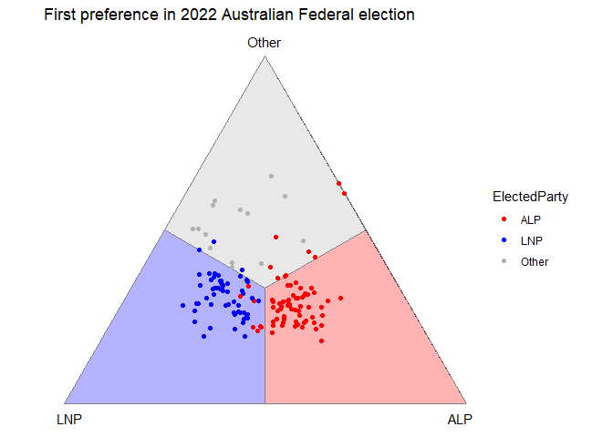
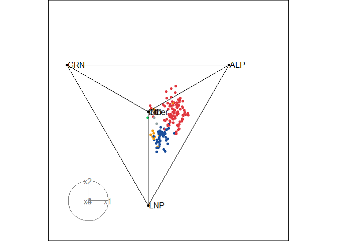

Ternary plot is one of the popular ways to visualize preference data, such as from preferential elections where voters rank candidates ordinally. Traditionally, ternary plot works with 3-part compositional variables, representing as 3 vertices of a 2D equilateral triangle. However, in many cases, preference data consists of more than 3 alternatives, making the 2D ternary plot inadequate to visualize the data.
prefviz provides a solution for creating ternary plots of both two and higher dimensions. These plots are made compatible with other interactivity R packages, allowing users to explore their ternary plot interactively.
Installation
You can install the development version of prefviz via:
# install.packages("devtools")
remotes::install_github("numbats/prefviz")Usage
Prepare your data
For optimal compatibility, we suggest your data have its alternatives/composition in columns and these columns sum to 1.
aecdop22_transformed <- prefviz:::aecdop22_transformed
head(aecdop22_transformed) |> select(-CountNumber, -ElectedParty)
#> # A tibble: 6 × 4
#> DivisionNm ALP LNP Other
#> <chr> <dbl> <dbl> <dbl>
#> 1 Adelaide 0.400 0.32 0.280
#> 2 Aston 0.325 0.430 0.244
#> 3 Ballarat 0.447 0.271 0.282
#> 4 Banks 0.353 0.452 0.195
#> 5 Barker 0.209 0.556 0.235
#> 6 Barton 0.504 0.262 0.234You can explore the wrapper functions dop_irv() and dop_transform() that assist your transformation.
Prepare components for ternary plot
Every ternary plot is made up of 3 components:
- Coordinates of the observations: Your n-part compositional data must be transformed into (n-1)-dimensional space via Helmert matrix.
- Vertices: The point coordinates that define the vertices of the simplex
- Edges: How the vertices are connected to create the simplex
These components are provided in a ternable object, and can be accessed directly through the object or via getter functions get_tern_*(). These get_tern_*() functions transform the components of the ternable object into suitable input data for ggplot2 and tourr.
Consider the distribution of first-round preferences in the 2022 Australian Federal Election:
aecdop22_transformed <- prefviz:::aecdop22_transformed
head(aecdop22_transformed)
#> # A tibble: 6 × 6
#> DivisionNm CountNumber ElectedParty ALP LNP Other
#> <chr> <dbl> <chr> <dbl> <dbl> <dbl>
#> 1 Adelaide 0 ALP 0.400 0.32 0.280
#> 2 Aston 0 LNP 0.325 0.430 0.244
#> 3 Ballarat 0 ALP 0.447 0.271 0.282
#> 4 Banks 0 LNP 0.353 0.452 0.195
#> 5 Barker 0 LNP 0.209 0.556 0.235
#> 6 Barton 0 ALP 0.504 0.262 0.234We can create a ternable object using the ternable() function:
tern22 <- ternable(aecdop22_transformed, ALP:Other)
tern22
#> Ternable object
#> ----------------
#> Items: ALP, LNP, Other
#> Vertices: 3
#> Edges: 6Draw a 2D ternary plot
# Get the input data
input_df <- get_tern_data(tern22, plot_type = "2D")
head(input_df)
#> DivisionNm CountNumber ElectedParty ALP LNP Other x1
#> 1 Adelaide 0 ALP 0.3998 0.3200 0.2802 0.05642712
#> 2 Aston 0 LNP 0.3255 0.4305 0.2440 -0.07424621
#> 3 Ballarat 0 ALP 0.4474 0.2709 0.2817 0.12480435
#> 4 Banks 0 LNP 0.3526 0.4522 0.1952 -0.07042784
#> 5 Barker 0 LNP 0.2085 0.5563 0.2352 -0.24593174
#> 6 Barton 0 ALP 0.5043 0.2619 0.2338 0.17140268
#> x2
#> 1 -0.06507478
#> 2 -0.10941054
#> 3 -0.06323766
#> 4 -0.16917809
#> 5 -0.12018830
#> 6 -0.12190294
# Visualize
ggplot(input_df, aes(x = x1, y = x2)) +
geom_ternary_cart() +
geom_ternary_region(
vertex_labels = tern22$vertex_labels,
aes(fill = after_stat(vertex_labels)),
alpha = 0.3, color = "grey50",
show.legend = FALSE
) +
geom_point(aes(color = ElectedParty)) +
add_vertex_labels(tern22$simplex_vertices) +
scale_fill_manual(
values = c("ALP" = "red", "LNP" = "blue", "Other" = "grey70"),
aesthetics = c("fill", "colour")
) +
labs(title = "First preference in 2022 Australian Federal election")
Draw a high-dimensional ternary plot
# Load the data
aecdop25_transformed <- prefviz:::aecdop25_transformed
head(aecdop25_transformed)
#> # A tibble: 6 × 8
#> DivisionNm CountNumber ElectedParty ALP GRN LNP Other IND
#> <chr> <dbl> <chr> <dbl> <dbl> <dbl> <dbl> <dbl>
#> 1 Adelaide 0 ALP 0.465 0.190 0.242 0.104 0
#> 2 Aston 0 ALP 0.373 0 0.377 0.209 0.0414
#> 3 Ballarat 0 ALP 0.424 0 0.286 0.262 0.0281
#> 4 Banks 0 ALP 0.364 0.119 0.391 0.106 0.0202
#> 5 Barker 0 LNP 0.225 0.0816 0.5 0.135 0.0586
#> 6 Barton 0 ALP 0.471 0.159 0.242 0.128 0
# Create ternable object
tern25 <- ternable(aecdop25_transformed, ALP:IND)
# Add colors to the points
party_colors <- c(
"ALP" = "#E13940", # Red
"LNP" = "#1C4F9C", # Blue
"GRN" = "#10C25B", # Green
"IND" = "#F39C12", # Orange
"Other" = "#95A5A6" # Gray
)
# Map to your data (assuming your column is called elected_party)
color_vector <- c(rep("black", 5),
party_colors[aecdop25_transformed$ElectedParty])
# Animate the tour
animate_xy(
get_tern_data(tern25, plot_type = "HD"),
edges = get_tern_edges(tern25),
obs_labels = get_tern_labels(tern25),
col = color_vector,
axes = "bottomleft"
)
References
Cook D., Laa, U. (2024) Interactively exploring high-dimensional data and models in R, https://dicook.github.io/mulgar_book/, accessed on 2025/12/20.